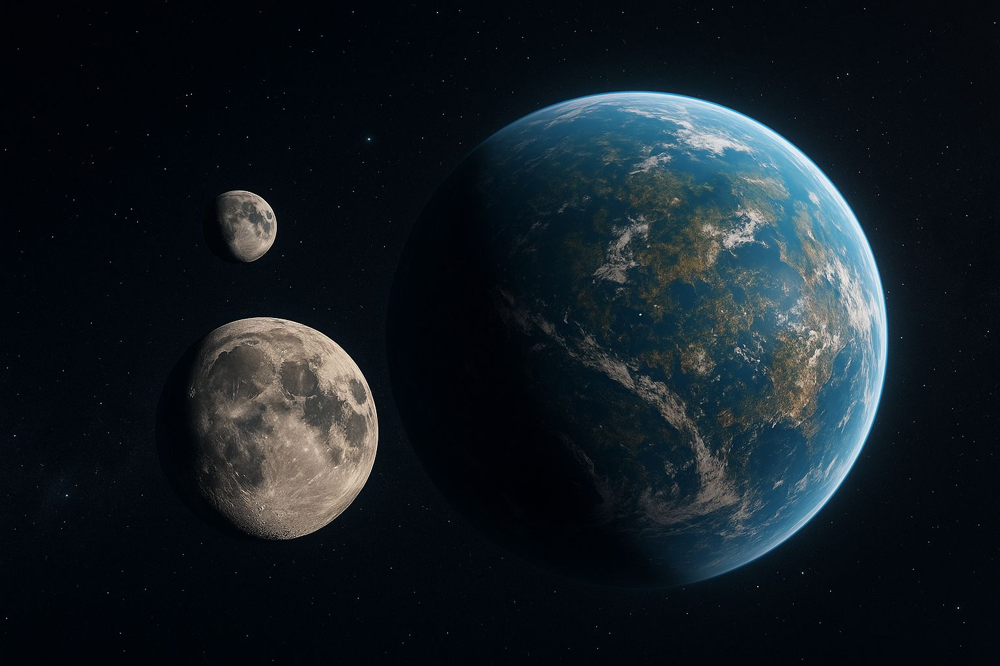

האם הבינה המלאכותית תמצא לנו את כדור הארץ הבא? 🌍
פורסם במקור ב LinkedIn
האם הבינה המלאכותית תמצא לנו את כדור הארץ הבא? 🌍
במשך שלושים שנה מצאו מדענים כ־6000 כוכבי לכת מחוץ למערכת השמש, אבל רק כ־20 מתוכם מוגדרים "דמויי כדור הארץ".
עכשיו, AI נכנסת לתמונה – לא כדי לדמיין עולמות חדשים, אלא כדי לאתר אותם ביעילות חסרת תקדים.
ד"ר ז'ן דאוולט, אסטרופיזיקאית מהמרכז הגרמני לתעופה וחלל, מובילה מחקר פורץ דרך - היא ופאנל חוקרים מאוניברסיטת ברן אימנו אלגוריתם מסוג Random Forest כדי לחזות אילו כוכבים הם מועמדים סבירים לארח כוכבי לכת דמויי ארץ - כאלה שיכולים לקיים מים נוזלים.
המטרה: לצמצם את הזמן והמשאבים המושקעים בתצפיות "עיוורות", ולהגדיל את שיעור ההצלחות בזיהוי כוכבים.
הדגש במחקר הוא על כוכבים קטנים מהשמש (גמדי M ו-K) שדווקא בזכות תוחלת החיים הארוכה שלהם, עשויים להוות בית פוטנציאלי לחיים תבוניים.
ציטוט מעניין של דאוולט:
"גם אם ראינו כוכב לכת במערכת מסוימת – זה לא אומר שזיהינו את כולם. המודל שלנו מסוגל לזהות אם יש סיכוי לכוכב דמוי ארץ שלא התגלה עדיין."
וזה רק השלב הראשון - יצירת מאגר כוכבי לכת דמויי ארץ היא תחילת הדרך לקראת העתיד שבו נוכל, אולי, לזהות גם חיים מחוץ למערכת השמש.
🔭 AI כבר לא רק על כדור הארץ. עכשיו היא גם מחפשת לנו בית חדש ביקום.
#AI #Space #Astronomy #Exoplanets #Innovation #RandomForest #DLR #MachineLearning #DeepTech #Astrobiology #ScientificBreakthrough
